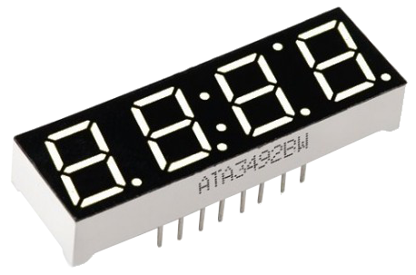
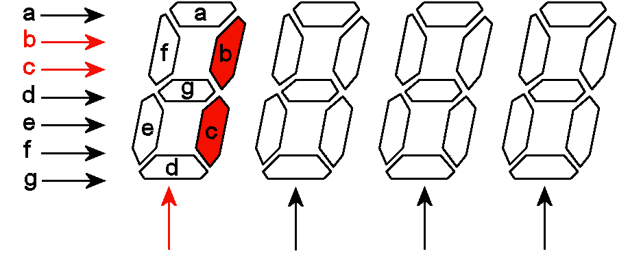
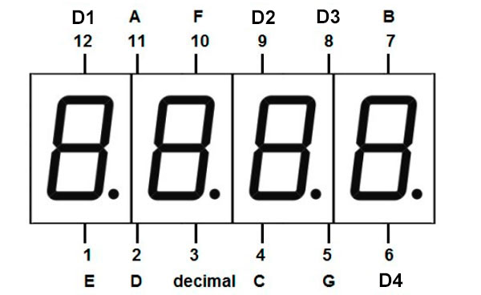
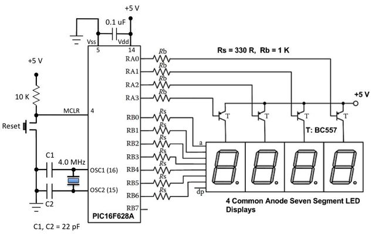
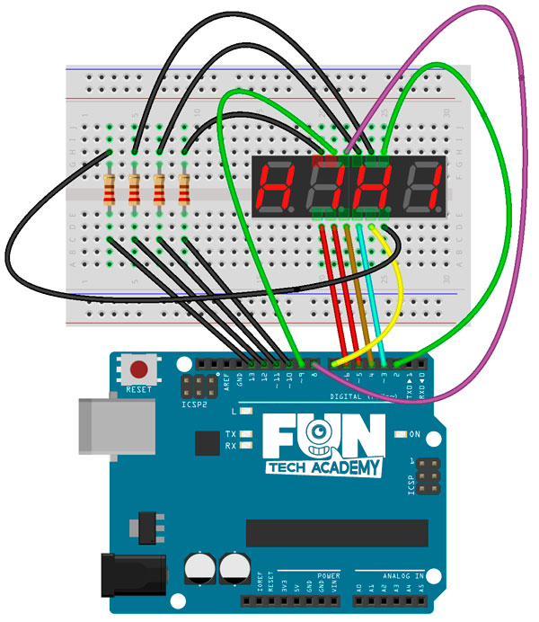
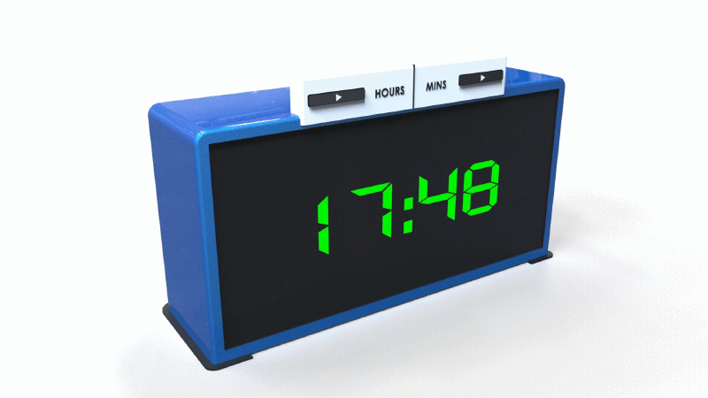

En el tema anterior, ha sido bastante fácil con un dígito, pero ahora que tenemos práctica, vamos a usar 4
dígitos.
Y si queremos mostrar 4 dígitos, ¿tenemos que multiplicar 8 cables x 4 dígitos más tensión y GND, en total
34 pines?
Para empezar, nuestra placa de Arduino no tiene tantos pines. Pero no nos hará falta.
Como se ha resuelto con el display cuádruple es manteniendo los 8 pines para iluminar los 7 segmentos más el
punto, y poner otros 4 pines para indicar a cuál de los dígitos corresponde la información que ponemos en
los 8 pines anteriores. Bueno, algo parecido, esos 4 pines para indicar la posición van a tierra pasando por
un transistor cada para hacer que se ilumine solo uno cada vez, haciendo el ciclo lo bastante rápido.
Y eso es todo. Simplemente seguimos utilizando 8 pines para iluminar los segmentos, pero solo hay uno activo
en un momento concreto. Y haciendo un ciclo rápido, iluminamos uno cada vez rápidamente y pasamos al
siguiente y luego al siguiente y problema resuelto.
(1) x Placa Arduino
(1) x Protoboard
(1) x Pantalla de 7 segmentos cuádruple
(4) x Resistencia de 220 Ohm
(x) x M M cables (cables de macho a macho)
Se trata un display de cátodo común, en el que se puede ver que los pines de cada segmento están compartidos para los 4 dígitos.

Por lo que para poder mostrar un número de 4 dígitos es necesario multiplexar la señal, es decir, iluminar secuencialmente cada uno de los dígitos en una sucesión muy rápida, creando la ilusión de que todos los dígitos están encendidos a la vez.

En la siguiente imagen mostramos el diagrama de pines del display.




Lo primero que vamos a hacer es conectar los 8 segmentos del display a los pines del 2 al 10 de nuestro
Arduino, para probarlos. Conectad GND al cátodo del primer digito con una resistencia y comprobad las
conexiones.
Una vez efectuado todo el cableado, descargaremos el script del siguiente
enlace y lo cargaremos como hemos
aprendido.
En este primer ejemplo veremos cómo se van encendiendo y apagando cada uno de los segmentos.
Ahora haremos que en nuestro display de 4 dígitos aparezcan los minutos y segundos de un reloj. Para ello, recordemos que la función milis() nos devuelve los milisegundos transcurridos de nuestro reloj interno.

Volver al índice